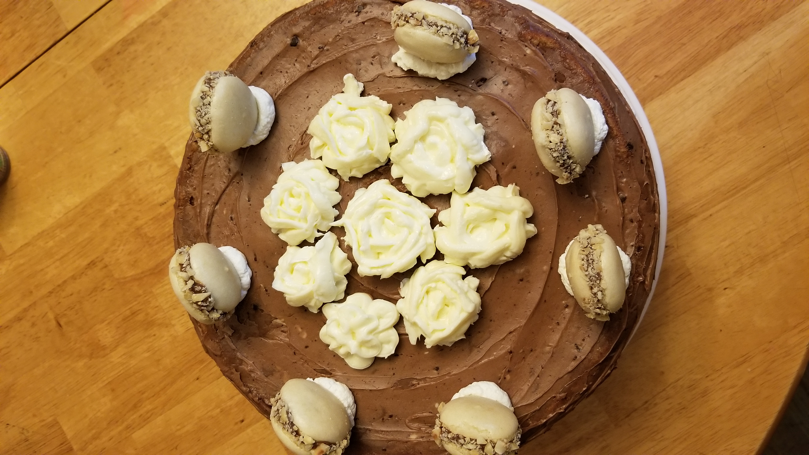
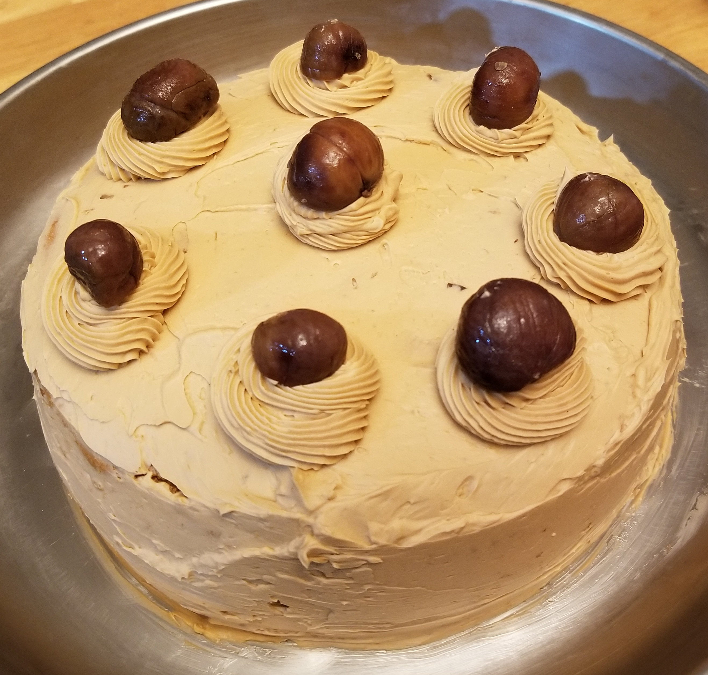
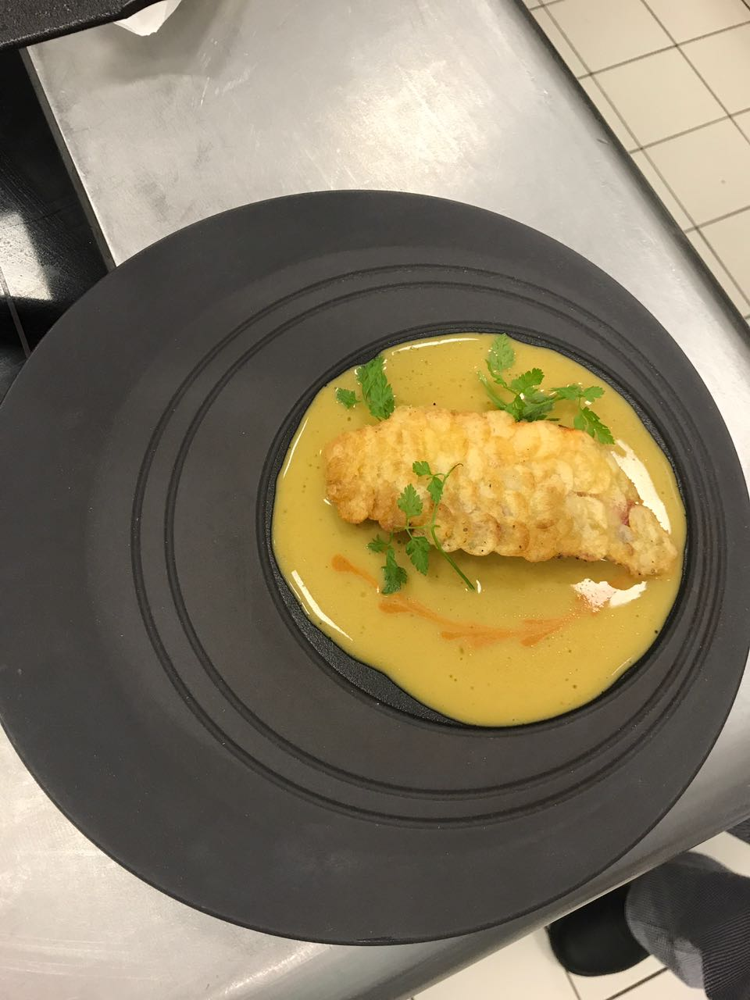
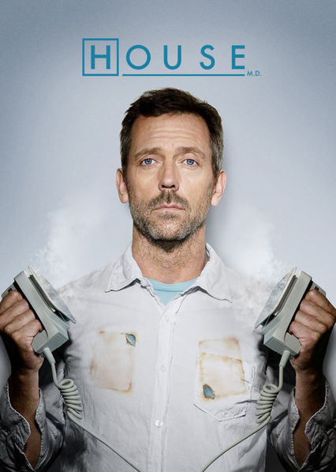
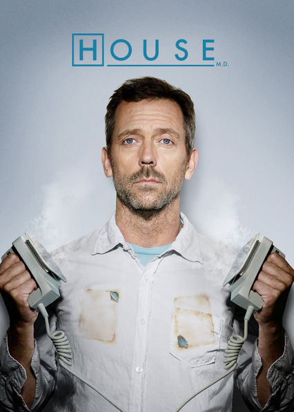
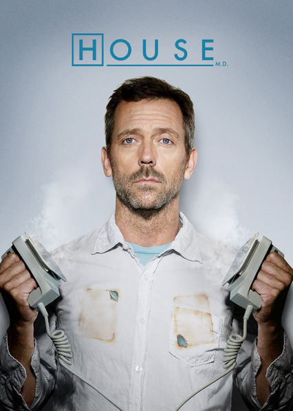

Interests
My interests include baking, gaming, and doing jigsaw puzzles. While I do not watch
TV a often, my favorite show is House MD; I am, however, a big anime fan. My favorite
one is "One Piece. My favorite genre of music is EDM, though I do listen to a little big of everything.
On the academic side, my favorite subject is science, specifically biology and chemistry. I also
like to travel; I hope to go to visit every continent (maybe not Antarctica). In the future, I hope to
be an orthopedic surgeon or work in cybersecurity.



 

